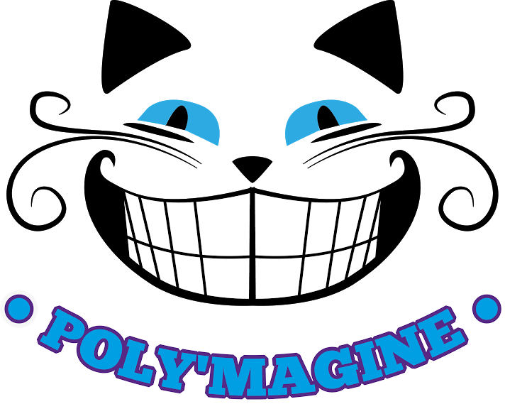
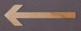
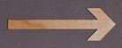

Poly'Magine
Jean (Respo Alternants)
 
Jean AUBERT, GTGC2A3, le plus professionnel de l'école, a décidé à l'issue d'un DUT Génie Civil d'effectuer son cursus d'ingénieur GC en alternance à Polytech Lille. Déjà fortement investi dans une association sportive, en tant que membre du comité directeur, il a immédiatement eu envie de prendre part à l'associatif de l'école au sein du BDE. Il a à cœur de conserver la dynamique d'intégration des alternants au sein de la vie étudiante de l'école. Il est notre Respo Alternants